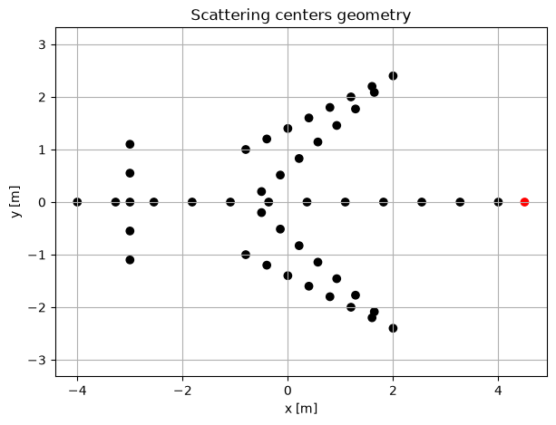
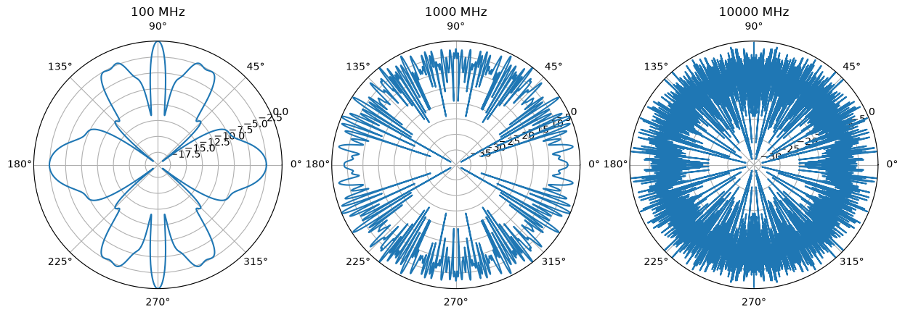
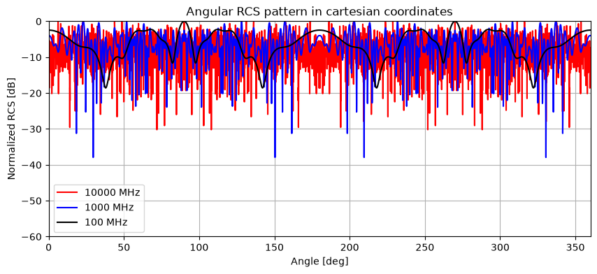
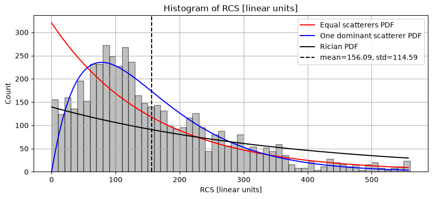
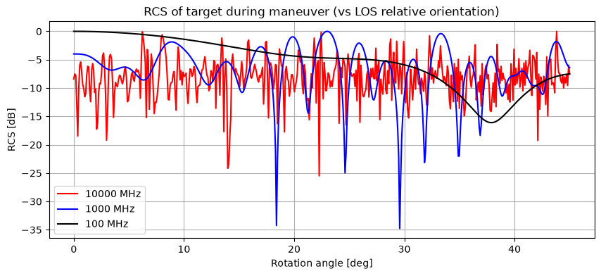
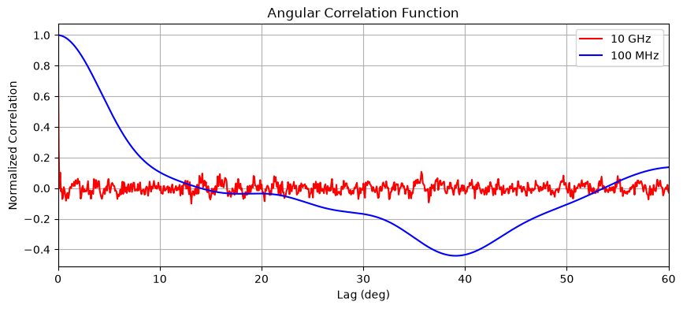
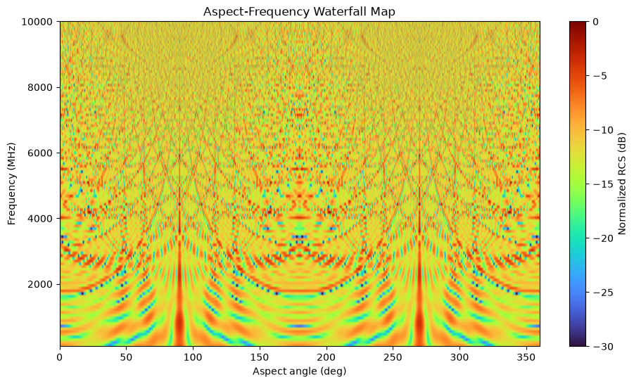

Radar Echo from an Extended Rigid Target#
Important
Learning Objectives
Understand coherent summation of scatterers within extended target
Relate target size to wavelength
Study aspect-dependent RCS
Investigate frequency scaling
Analyze angular correlation and RCS statistics
Explore maneuvering-target signatures
Theory#
Coherent monostatic backscatter from multiple point scatterers.
For scatterers located at positions \(r_n=(x_n,y_n)\) with amplitudes \(a_n\), the monostatic backscattered field is
where \(k=\frac{2\pi}{\lambda}\) and \(\hat u=[\cos\phi,\sin\phi].\)
The relative radar cross section (RCS) is \(\sigma(\phi)=|E(\phi)|^2.\)
This notebook focuses on coherent interference effects and does not model shadowing, polarization, diffraction, multiple scattering, or absolute calibration.
import numpy as np
import matplotlib.pyplot as plt
c=3.e8
Start with generation of the target’s mode - a set of scatterers that are located in 2D space and have some scattering characteristics. In reality every scatterer characterised with a complex scattering coefficient \(\dot A\), which is defining the amplitude and phase of scatered fild \( {\dot {\vec E^s}}(t,\theta)\):
As we consider the case of monostatic radar, when the propagation directions of incident and scattered waves are the same, this coefficient \({\dot A}(\theta)\) is a function on azimuth angle \(\theta\) of the line-of-sight directions. For simplicity, in this analysis we neglect this angular dependency, use only real values of \(\dot A\).
The number of scatterers: 48
Plot the scatterers geometry#

Calculate the angular dependency of the backscattering RCS#


Statistical distribution of the RCS#
m1=10.30, std1=12.07


Angular Correlation Functions at Different Frequencies#

The RCS angular dependency at higher frequency shows very narrow correlation interval, every new radar pulse response is completely independent from the previous one even for slow maneuvering target. At low frequency the situation is quite different - within quite reasonable interval of observation angles the target’s RCS can be assumed quite constant.
Nice image of the RCS angular dependency in a wide frequency interval#

See, how the frequency scaling influence the RCS angular dependency…
Exercise Questions#
Exercise 1#
Investigate the effect of target size on radar cross-section (RCS) angular behavior.
Question: If all dimensions of a target are doubled while keeping the radar frequency constant, how would you expect the angular correlation width and the rate of RCS fluctuations with aspect angle to change? Explain your reasoning.
Exercise 2#
Study the influence of geometric perturbations on coherent scattering.
Question: Assume that each scatterer position is randomly perturbed by ±5 cm. Compare the expected impact of these perturbations on the RCS pattern at frequencies of 100 MHz, 1 GHz, and 10 GHz.
Exercise 3#
Examine the role of nonuniform scatterer amplitudes.
Question: How does assigning random amplitudes to individual scattering centres affect the overall RCS distribution compared with using identical amplitudes for all scatterers?
Exercise 4#
Estimate angular decorrelation behavior at different radar frequencies.
Question: For the same target geometry, rank the angular decorrelation widths at 100 MHz, 1 GHz, and 10 GHz. Explain the physical reason for the trend.
Exercise 5#
Compare RCS signatures of different target shapes.
Question: Simulate or sketch the expected angular RCS patterns for:
a) A circular target b) A triangular target c) A random cloud of scatterers
Describe the main characteristics of each pattern.
Exercise 6#
Analyze electrical size scaling.
Question: What happens to the target electrical size D/λD/\lambda when all target dimensions are doubled? How does this change affect the angular RCS response and correlation width?
Exercise 7#
Relate geometric perturbations to wavelength.
Question: A scatterer position error of ±5 cm is introduced. Express this perturbation as a fraction of the wavelength at:
100 MHz
1 GHz
10 GHz
Based on these values, discuss how sensitivity to perturbations changes with frequency.
Exercise 8#
Explore amplitude statistics in distributed targets.
Question: How do random variations in scatterer amplitudes influence the RCS histogram and the contribution of individual scatterers to the coherent sum?
Exercise 9#
Measure angular decorrelation width.
Question: Estimate and compare the angular decorrelation widths for a given target observed at:
100 MHz
1 GHz
10 GHz
What trend do you observe, and why?
Exercise 10#
Shape recognition from RCS behavior.
Question: Compare the angular RCS signatures of:
Circular targets
Triangular targets
Random scatterer clouds
What characteristic features could be used to distinguish these target types?
Discussion Question#
What radar scattering phenomena are captured by this simplified coherent-scatterer model? Which important physical effects are neglected, and how might these omissions limit the realism of the simulation?